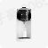

调奶器FD04X ROOT云 已上架
产品分类：调奶器 产品型号：FD04X 产品代码：— 产品ID：2117198347609673729 产品模板ID：2013187245645340673 上架范围：北美、欧洲、亚太、中国
功能版本： ▧ 新建版本
✓ 基础信息〉✓ 功能设计〉✓ 扩展程序〉✓ 固件配置〉✓ 设备调试〉✓ 配网引导〉✓ 高级配置

产品分类：调奶器 产品型号：FD04X 产品代码：— 产品ID：2117198347609673729 产品模板ID：2013187245645340673 上架范围：北美、欧洲、亚太、中国
功能版本： ▧ 新建版本